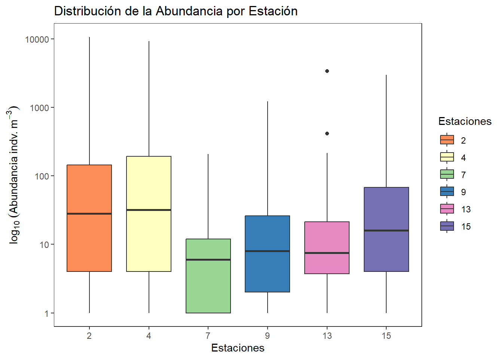
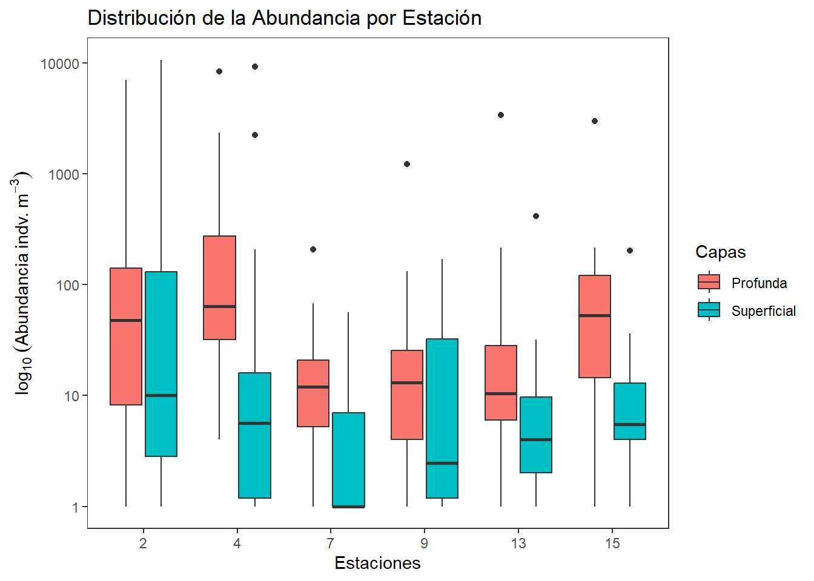
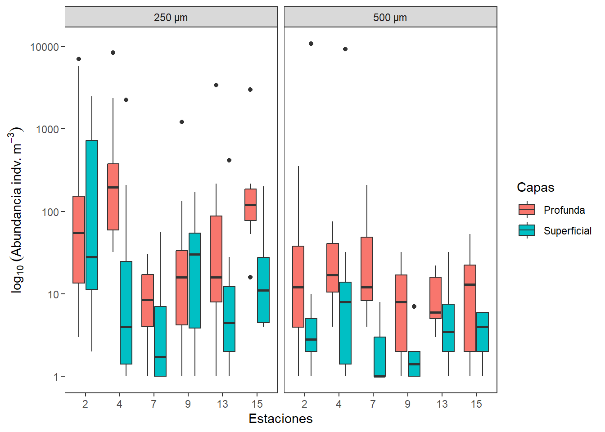
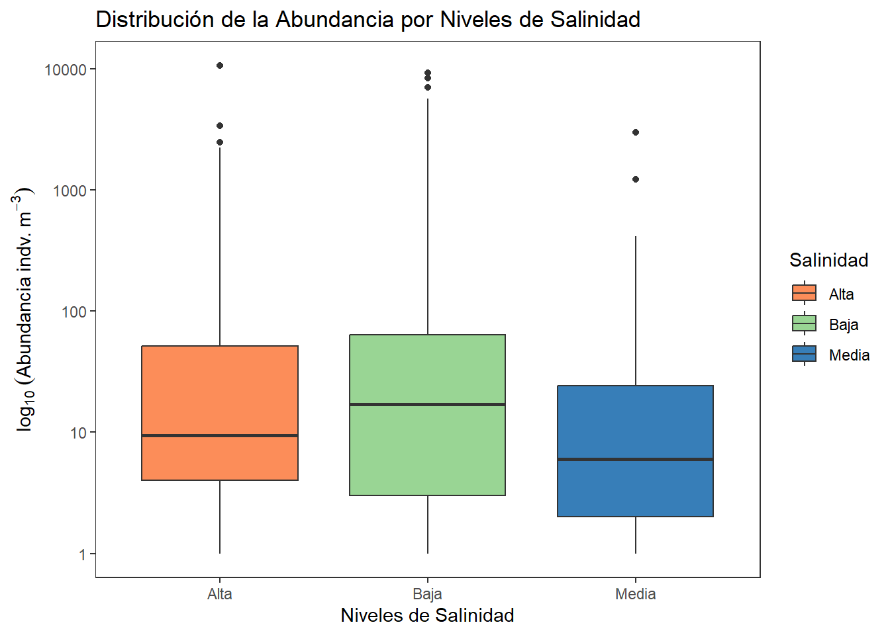
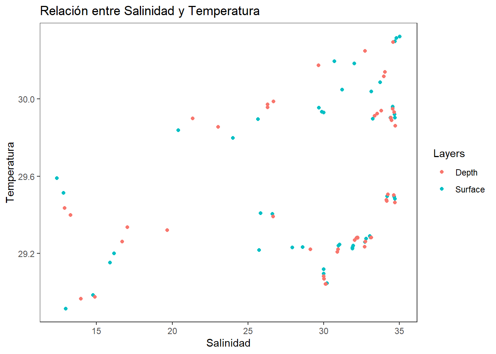
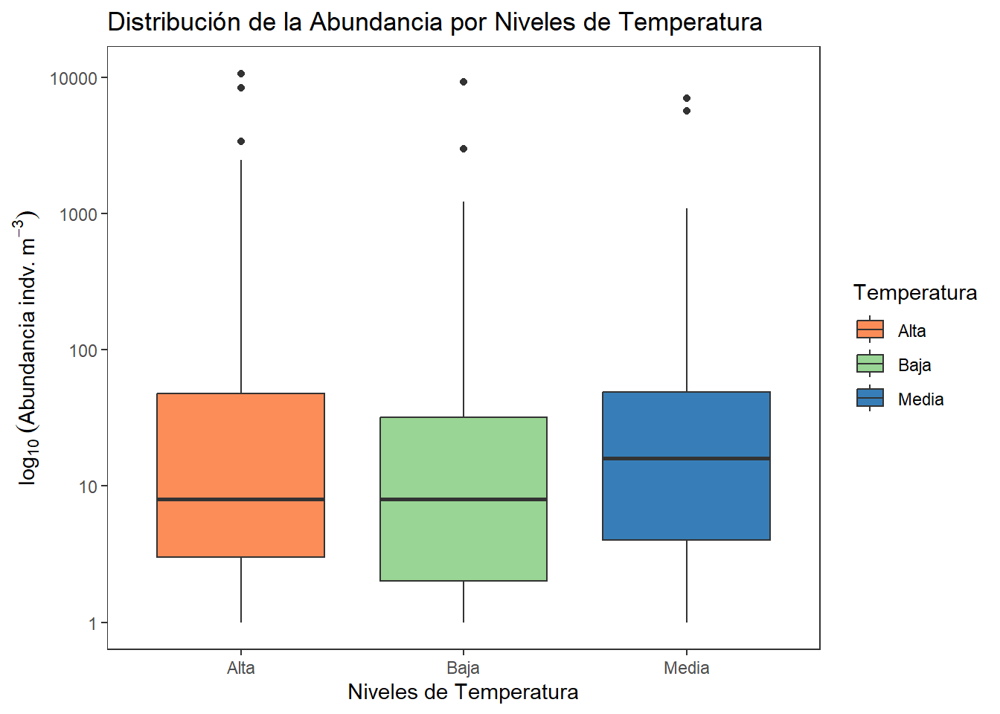

# install.packages("tidyverse") # Descomentar si no está instalado
library(tidyverse)
library(readxl)Resumen
El presente taller tiene por objeto, brindar pautas generales para el manejo y visualización de datos biológicos en el lenguaje tidyverse de R. Se realizan algunas operaciones generales usando una base de datos de plancton, que incorpora variables biológicas y ambientales.
Taller 2. Manejo de datos biológicos y ambientales

Introducción
Se realizarán ejercicios con los comandos generales de tidyverse en el manejo y visualización de datos, utilizando como ejemplo la base de datos de plancton en un estuario de Colombia (biol).
La base de datos “Riqueza” tiene 498 registros y 8 columnas, incluyendo:
- Variables categóricas o factores:
Station(Estación, numérica pero categórica en contexto)Size(Tamaños de malla del plancton)Layers(Capas o estratos en el gradiente de profundidad)Groups(Grupos de plancton)
- Variables cuantitativas:
Abundance(Abundancia de los grupos de plancton)Temperature(Temperatura del agua)Salinity(Salinidad del agua)Density(Densidad de organismos)
Instalación y carga de paquetes
Para trabajar con tidyverse, primero debemos instalar y cargar los paquetes requeridos.
Carga y exploración de datos
Utilizamos glimpse para ver la estructura general de la base de datos y summary para obtener estadísticas descriptivas.
# Cargar datos desde Excel
biol <- read_xlsx("plancton.xlsx", sheet = "Riqueza")
# Explorar estructura
# glimpse(biol)
# summary(biol)1. Selección y filtrado
select permite escoger columnas específicas, mientras que filter se usa para seleccionar filas según condiciones.
# Seleccionar variables clave
datos_select <-
biol %>%
select(Station, Size, Layers, Abundance, Temperature, Salinity)# Filtrar datos por una condición específica (ejemplo: temperatura > 28°C)
datos_filtro =
biol %>%
filter(Temperature > 28) 2. Creación de nuevas variables
mutate se usa para generar nuevas variables derivadas de otras columnas.
# Crear una nueva variable de relación Abundancia/Temperatura
biol =
biol %>%
mutate(rel_Ab_Temp = Abundance / Temperature)3. Resumen estadístico de datos agrupados
group_by permite agrupar datos según categorías para luego aplicar funciones resumen como mean(), sd(), ….
biol = read_xlsx("plancton.xlsx", sheet = "Riqueza")
biol$Station = as.factor(biol$Station)
biol$Size = as.factor(biol$Size)
# Resumen estadístico de un factor "datos_resumidos" por estaciones
datos_resumidos =
biol %>%
group_by(Station, Size) %>%
summarise (datos.m = mean(Abundance, na.rm= TRUE), # Medias
datos.de = sd(Abundance, na.rm= TRUE), # Desviaciones
datos.var= var(Abundance, na.rm= TRUE), # Varianzas
datos.n = n(), # Tamaño de la muestra
datos.ee = sd(Abundance, na.rm= TRUE) / # Error estándar
sqrt(Abundance)
)Agrupamos los datos por Station, Size y Layers y calculamos estadísticas descriptivas clave como la temperatura, salinidad, densidad y la abundancia total. Esto permite obtener un resumen general de las condiciones ambientales y biológicas en diferentes estaciones y capas de muestreo.
# Resumen estadístico de dos factores "datos_resumidos1"
datos_resumidos1 =
biol %>%
group_by(Station, Size, Layers) %>%
reframe (datos.m = mean(Abundance, na.rm= TRUE), # Medias
datos.de = sd(Abundance, na.rm= TRUE), # Desviaciones
datos.var= var(Abundance, na.rm= TRUE), # Varianzas
datos.n = n(), # Tamaño de la muestra
datos.ee = sd(Abundance, na.rm= TRUE) / # Error estándar
sqrt(Abundance)
)
# reframe4. Transformación de datos
pivot_longer cambia la estructura de los datos de ancho a largo.
# Convertir datos de formato ancho a largo
formato_largo <-
biol %>%
pivot_longer(cols = c(Temperature, Salinity, Density), # Estas columnas en 1 sola
names_to = "Environmental_Variable", # Nombre de la nueva columna
values_to = "Value") # Valores de las columnas pivot_wider regresa los datos a su formato original (ancho).
# Convertir de formato largo a ancho
formato_ancho <-
formato_largo %>%
pivot_wider(names_from = Environmental_Variable, # Usa esta columna para crear nuevas columnas
values_from = Value, # Valores de las nuevas columnas
values_fn = first) # Primer valor encontrado en caso de duplicados5. Transposición de datos
Los siguientes procedimientos permiten agrupar por grupos taxonómicos en filas y estaciones en columnas, para luego transporner la base y que pueda ser utilizada en diferentes procedimientos.
# Agrupar a los taxones en filas y a las estaciones en columnas
biol_transp <-
biol[,c(1,3:5)] %>% # Selecciona estas columnas
group_by(Station, Groups) %>% # Agrupa por estación y grupos tax
summarise(Abundance = sum(Abundance, na.rm = TRUE), # Suma la ab. por grupo y estación
.groups = "drop") %>% # Elimina la agrupación
pivot_wider(names_from = Station,
values_from = Abundance) # Convierte "Station" en nuevas columnas.
# Nota: *Esta no es necesaria para el taller
# Transponer la anterior usando pivot_longer y pivot_wider
biol_transp1 <-
biol_transp %>%
pivot_longer(cols = -1, # Todas las columnas excepto la primera se convierten en filas
names_to = "Station", # Los nombres de las columnas originales se almacenan aquí
values_to = "value") %>% # Valores de las columnas originales se almacenan aquí
pivot_wider(names_from = names(biol_transp)[1], # Usa la primera columna original para crear nuevas columnas
values_from = value) # Los valores se colocan en las nuevas columnas6. Unión de datos
Se puede unir bases de datos con left_join. Para este ejercicio se crea la variable categórica Regiones
library(dplyr)
# Se requiere a Station como factor
biol$Station = as.factor(biol$Station)
# Crear una base de datos adicional de regiones (nueva variable)
Regiones =
tibble(Station = c("2", "4", "7", "9", "13", "15"),
Region = c("Norte", "Sur", "Este", "Oeste", "Central", "Otras"))
biol1 =
biol %>%
left_join(Regiones, by= "Station")7. Conversión de variables categóricas
Se convierte a Station, Size y Layers en factores para asegurar que R las reconozca como variables categóricas y optimizar análisis posteriores.
# Opción antgua (as.factor)
biol$Station = as.factor(biol$Station)
biol$Size = as.factor(biol$Size)
# Opción con Tidy, (across)
biol <-
biol %>%
mutate(across(c(Station, Size, Layers), as.factor))8. Abreviar nombres de grupos biológicos
Para facilitar la visualización y manipulación de datos, podemos abreviar los nombres de los grupos biológicos utilizando abbreviate(). Esto es útil cuando trabajamos con nombres largos que dificultan la lectura en gráficos y tablas. Se crea una nueva columna (Abrev) con abreviaciones de los nombres de los grupos taxonómicos.
# Librería para edición de tablas
library(kableExtra)Warning: package 'kableExtra' was built under R version 4.4.2
Adjuntando el paquete: 'kableExtra'The following object is masked from 'package:dplyr':
group_rows# Genera una nueva columna con valores abreviados en Biol
biol =
biol %>%
mutate(Abrev = abbreviate(Groups, minlength = 4))
# Editar tabla
head(biol) %>% # head muestra solo las primeras tres filas de la tabla
kbl() %>%
kable_classic(full_width = F, html_font = "Cambria")| Station | Size | Layers | Groups | Abundance | Temperature | Salinity | Density | Abrev |
|---|---|---|---|---|---|---|---|---|
| 2 | 250 μm | Surface | Quetognatos | 0 | 30.29749 | 34.69981 | 21.417828 | Qtgn |
| 2 | 250 μm | Surface | Sergestidae | 0 | 29.40959 | 25.83323 | 15.085254 | Srgs |
| 2 | 250 μm | Surface | Luciferidae | 0 | 29.59008 | 12.38513 | 5.729643 | Lcfr |
| 2 | 250 μm | Surface | Calanoida | 32 | 30.29749 | 34.69981 | 21.417828 | Clnd |
| 2 | 250 μm | Surface | Cyclopoida | 4 | 29.40959 | 25.83323 | 15.085254 | Cycl |
| 2 | 250 μm | Surface | Harpacticoida | 2 | 29.59008 | 12.38513 | 5.729643 | Hrpc |
# Crear la tabla con nombres completos y abreviados de los Groups
tabla <-
cbind(Grupos = biol[,4],
Abreviaturas = biol$Abrev)
# Editar tabla
head(tabla) %>%
kbl() %>%
kable_classic(full_width = F, html_font = "Cambria")| Groups | Abreviaturas |
|---|---|
| Quetognatos | Qtgn |
| Sergestidae | Srgs |
| Luciferidae | Lcfr |
| Calanoida | Clnd |
| Cyclopoida | Cycl |
| Harpacticoida | Hrpc |
Se convierten las variables categóricas en factores y se agrupan los datos para calcular promedios y totales de las variables ambientales y de abundancia de los taxones seleccionados. Se construye una tabla (biol_ancho) que es útil para cuando la base de datos inicial está en formato largo y queremos transformarla a formato ancho, incluyendo a varios factores o variables agrupadoras, en caso de que se cuentre con ellas (Station, Size, Layers). Se genera una nueva columna Ref que resume la identificación de cada combinación de estación, tamaño y capa.
# Convertir variables agrupadoras a factores
factores <-
biol[,-4] %>%
mutate(across(c(Station, Size, Layers), as.factor))
library(dplyr)
# Procesamiento para ajustar los datos en formato ancho
biol_ancho <-
biol %>%
# Variables a factores
mutate(across(c(Station, Size, Layers), as.factor)) %>%
# Agrupamiento para el formato ancho
group_by(Station, Size, Layers) %>%
# Promedios de las variables ambientales
summarize(
across(c(Temperature, Salinity, Density), ~round(mean(.),2)),
# Totales de las abundancias por cada factor
Abundance = list(setNames(tapply(Abundance, Abrev,sum,
default = 0), unique(Abrev))),
# Corregir algunos errores del agrupamiento
.groups = "drop") %>%
# Separar las abundancias en las columnas de cada taxon
unnest_wider(Abundance) %>%
# Crear columna Ref, tomando iniciales de tres factores
mutate(
Ref = paste0(substr(Station, 1, 2),
substr(Size, 1, 1),
substr(Layers, 1, 1))) %>%
# Pasar la columna de referencia (consec) a la 1a columna
select(Ref, everything())9. Seleccionar los 5 taxones más abundantes
El siguiente procedimiento es apropiado cuando se tienen demasiados taxones y se quiere trabajar con una versión resumida, normalmente se escogen los 10 o 15 taxones más abundantes para resumir los análisis, en este ejercicio como se cuenta con pocos taxones, se calcula la abundancia total de cada taxón y se seleccionan los cinco más abundantes. En biol_selecse seleccionan únicamente los grupos más abundantes del conjunto total.
# Abundancias de los 5 grupos más abundantes
abundantes <-
biol_ancho %>%
ungroup() %>% # Elimina cualquier agrupación previa
select(Qtgn:Otrs) %>% # Selecciona las columnas de los grupos taxonómicos
summarise(across(everything(),
sum, na.rm = TRUE)) %>% # Calcula la abundancia total de cada grupo
pivot_longer(cols = everything(),
names_to = "Grupo",
values_to = "Total") %>% # Convierte a formato largo
arrange(desc(Total)) %>% # Ordena de mayor a menor
slice_head(n = 5) # 5 grupos más abundantes
# Filtrar en biol_ancho solo estos 5 grupos más abundantes
biol_selec <-
biol_ancho %>%
select(Ref, Station, Size, Layers,
Temperature, Salinity, Density,
all_of(abundantes$Grupo)) # Mantiene solo los grupos seleccionados10. Visualización de factores
ggplot2 nos permite crear gráficos para explorar los datos. Se genera una figura de cajas para visualizar las diferencias en la abundancia del plancton, entre las diferentes estaciones del estuario evaluado.
# Convertir variables a factores en caso que se requiera
biol <-
biol %>%
mutate(across(c(Station, Size, Layers), as.factor))
# Gráfico de caja de la abundancia por estación
ggplot(biol, aes(x = factor(Station), y = Abundance)) +
geom_boxplot(aes(fill = factor(Station))) +
scale_y_continuous(trans = "log10") + # Aplicar la transformación logarítmica
scale_fill_manual(values = c('#fc8d59','#ffffbf','#99d594','#377eb8','#e78ac3','#7570b3')) +
labs(title = "Distribución de la Abundancia por Estación",
x = "Estaciones", fill = "Estaciones",
y = expression(log[10]~(Abundancia~indv.~m^-3))
) +
theme_bw() +
theme(
panel.grid.major = element_blank(),
panel.grid.minor = element_blank()
)
# probar sacale_fill_manual, con: scale_color_viridis(discrete = TRUE)Con el comando aes(fill = Layers) se incorporan las capas superficial y profunda en las diferentes zonas.
library(forcats) # Para manipulación de factores
# Cambiar etiquetas de Layers con recode_factor()
biol <-
biol %>%
mutate(Layers = recode_factor(Layers,
"Depth" = "Profunda",
"Surface" = "Superficial"))
# Gráfico de caja de la abundancia por estación
ggplot(biol, aes(x = factor(Station), y = Abundance)) +
geom_boxplot(aes(fill = Layers)) +
scale_y_continuous(trans = "log10") + # Aplicar la transformación logarítmica
labs(title = "Distribución de la Abundancia por Estación",
x = "Estaciones", fill = "Capas",
y = expression(log[10]~(Abundancia~indv.~m^-3))
) +
theme_bw()+
theme(
panel.grid.major = element_blank(),
panel.grid.minor = element_blank()
)
La capa facet_wrap() permite incluir más factores como el del ojo de malla usado para la colecta del plancton.
library(ggplot2)
library(dplyr)
library(readxl)
library(forcats) # Para manipulación de factores
library(viridis)
# Cambiar etiquetas de Layers con recode_factor()
biol <-
biol %>%
mutate(Layers = recode_factor(Layers,
"Depth" = "Profunda",
"Surface" = "Superficial"))
# Crear gráfico con etiquetas de valores atípicos redondeados
ggplot(biol, aes(x = factor(Station), y = Abundance)) +
geom_boxplot(aes(fill = Layers)) +
labs(
x = "Estaciones", fill = "Capas",
y = expression(log[10]~(Abundancia~indv.~m^-3))
) +
scale_y_continuous(trans = "log10") + # Aplicar la transformación logarítmica
scale_color_viridis(discrete = TRUE) +
facet_wrap(~ Size , nrow = 1, strip.position = "top") +
theme_bw() +
theme(
panel.grid.major = element_blank(),
panel.grid.minor = element_blank()
)
11. Categorizar una variable contínua
En algunos casos, es útil transformar una variable continua en una categórica para facilitar la comparación y visualización de datos. En este caso, convertimos Salinity en una variable categórica con tres niveles: “Baja”, “Media” y “Alta”.
a.) Método basado en cuantiles
Este método divide la variable en tres partes iguales (terciles) utilizando los cuantiles de la distribución. En el siguiente ejercicio se crea una variable categórica llamada Salinity_Level.
biol <-
biol %>%
mutate(Salinity_Level = case_when(
Salinity <= quantile(Salinity, 1/3, na.rm = TRUE) ~ "Baja",
Salinity <= quantile(Salinity, 2/3, na.rm = TRUE) ~ "Media",
Salinity <= quantile(Salinity, 3/3, na.rm = TRUE) ~ "Alta"
))
# Se puede resumir el nivel alto por el comando "TRUE ~ "Alta"". ### **Distribución de la Abundancia por Niveles de Salinidad**
ggplot(biol, aes(x = Salinity_Level, y = Abundance)) +
geom_boxplot(aes(fill = Salinity_Level)) +
scale_y_continuous(trans = "log10") + # Aplicar la transformación logarítmica
scale_fill_manual(values = c('#fc8d59','#99d594','#377eb8')) + # Colores personalizados
labs(title = "Distribución de la Abundancia por Niveles de Salinidad",
x = "Niveles de Salinidad", fill = "Salinidad",
y = expression(log[10]~(Abundancia~indv.~m^-3))
) +
theme_bw() +
theme(
panel.grid.major = element_blank(),
panel.grid.minor = element_blank()
)
b.) Método basado en summary()
Otra forma de categorizar Salinity es usar la función summary() para obtener los valores clave de la variable y definir manualmente los rangos.
summary(biol$Salinity) Min. 1st Qu. Median Mean 3rd Qu. Max.
12.39 25.83 31.04 28.50 33.81 35.03 Con base en estos valores, se puede definir los niveles de salinidad según su distribución:
biol <-
biol %>%
mutate(Salinity_Level = case_when(
Salinity < 30 ~ "Baja",
Salinity >= 30 & Salinity < 35 ~ "Media",
Salinity >= 35 ~ "Alta"
))
# Se puede resumir el nivel alto por el comando "TRUE ~ "Alta"". Este método permite una categorización más detallada sobre los valores de corte, basado en información ambiental del lugar o de estudios previos.
Cuestionario en clase
# Cargar datos desde Excel
biol <- read_xlsx("plancton.xlsx", sheet = "Riqueza")1. Exploración de datos
Pregunta: ¿Cuántas observaciones hay por cada categoría de Size?
biol %>%
group_by(Size) %>%
summarize(count = n())# A tibble: 2 × 2
Size count
<chr> <int>
1 250 μm 282
2 500 μm 216Pregunta: ¿Cuántas observaciones hay por cada Size y Layers?
biol %>%
group_by(Size, Layers) %>%
summarize(count = n())# A tibble: 4 × 3
# Groups: Size [2]
Size Layers count
<chr> <chr> <int>
1 250 μm Depth 144
2 250 μm Surface 138
3 500 μm Depth 72
4 500 μm Surface 1442. Filtrado condicional
Pregunta: Encuentra todas las observaciones donde la salinidad (Salinity) es mayor a 35.
muestras_salin <-
biol %>%
filter(Salinity > 35)3. Creación de variables
Pregunta: Calcula una nueva variable que sea la relación entre Density y Temperature.
biol <-
biol %>%
mutate(Density_Temp = Density / Temperature)Pregunta: Calcula una nueva variable con la relación entre Abundance y Density.
biol <-
biol %>%
mutate(Abundance_Density = Abundance / Density)4. Resumen estadístico
Pregunta: Calcula los valores máximos, mínimos, la mediana, el rango y el coeficiente de variación de abundancia por cada combinación de Size y Layers.
# Resumen estadístico "datos_resum"
datos_resumidos <-
biol %>% # Base de datos resumida
group_by(Layers) %>% # Factor o variable agrupadora
summarise(datos.me = median(Abundance, na.rm = TRUE), # Mediana de cada grupo del factor
datos.ran = max(Abundance, na.rm = TRUE) -
min(Abundance, na.rm = TRUE), # Rango de cada grupo
datos.coef = sd(Abundance, na.rm = TRUE)/
mean(Abundance, na.rm = TRUE), # Coeficiente de variación
) 5. Transformación de datos
Pregunta: Convierte los datos a formato largo.
formato_largo <-
biol %>%
pivot_longer(cols = c(Temperature, Salinity, Density),
names_to = "Measurement",
values_to = "Value")Convierte los datos ambientales (Temperature, Salinity, Density) a formato largo.
biol_largo <-
biol %>%
pivot_longer(cols = c(Temperature, Salinity, Density),
names_to = "Measurement", values_to = "Value")6. Visualización de una relación de variables
Pregunta: Crea un gráfico de dispersión donde el eje X sea la salinidad (Salinity) y el eje Y la temperatura (Temperature), diferenciando por Layers.
ggplot(biol, aes(x = Salinity, y = Temperature, color = Layers)) +
geom_point() +
labs(title = "Relación entre Salinidad y Temperatura",
x = "Salinidad", y = "Temperatura") +
theme_bw() +
theme(
panel.grid.major = element_blank(),
panel.grid.minor = element_blank()
)
7. Visualización de una variable categorizada
Pregunta: Categoriza a la temperatura en tres niveles y visualizar su relación con la abundancia.
Paso 1: Categorizar la Temperatura
Utilizar cuantiles, transformamos Temperature en tres niveles: Baja, Media y Alta.
biol <-
biol %>%
mutate(Temperature_Level = case_when(
Temperature <= quantile(Temperature, 1/3, na.rm = TRUE) ~ "Baja",
Temperature <= quantile(Temperature, 2/3, na.rm = TRUE) ~ "Media",
TRUE ~ "Alta"
))Paso 2: Visualizar la Relación entre Temperatura y Abundancia
ggplot(biol, aes(x = Temperature_Level, y = Abundance)) +
geom_boxplot(aes(fill = Temperature_Level)) +
scale_y_continuous(trans = "log10") + # Aplicar la transformación logarítmica
scale_fill_manual(values = c('#fc8d59','#99d594','#377eb8')) + # Colores personalizados
labs(title = "Distribución de la Abundancia por Niveles de Temperatura",
x = "Niveles de Temperatura", fill = "Temperatura",
y = expression(log[10]~(Abundancia~indv.~m^-3))
) +
theme_bw() +
theme(
panel.grid.major = element_blank(),
panel.grid.minor = element_blank()
)